地政学
フィレンツェは国家首都ではありませんが、トスカーナの行政、文化、観光政策を束ねる中心です。メディチ家、共和国、統一期の首都経験は、地方都市を超える外交と権力の記憶を残しています。欧州文化外交の舞台です。

🇮🇹 イタリア / ヨーロッパ / World City Atlas
アルノ川沿いにルネサンスの記憶、観光圧、職人工房、大学生活、宗教儀礼が重なるトスカーナの中心都市。美術の都であると同時に、暮らしと労働の緊張を読む都市です。
都市の骨格
フィレンツェは小さな中心に見えますが、アルノ川、丘陵、橋、駅、大学、工房、観光動線が密に絡みます。保存された景観の中で、住民の生活と来訪者の視線が毎日交差します。
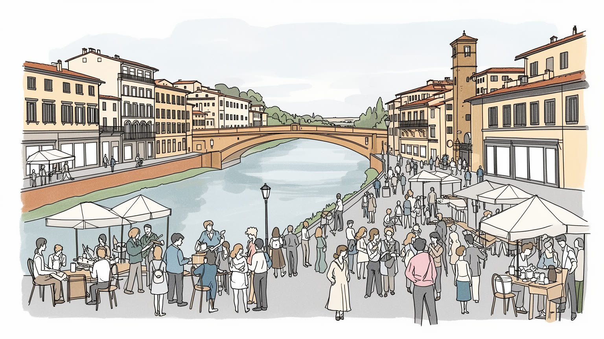
フィレンツェは国家首都ではありませんが、トスカーナの行政、文化、観光政策を束ねる中心です。メディチ家、共和国、統一期の首都経験は、地方都市を超える外交と権力の記憶を残しています。欧州文化外交の舞台です。
美術館とホテルだけでなく、革工房、修復、大学、医療、食品、見本市が働く場を作ります。観光の季節性は接客、清掃、配送、警備を揺らし、伝統工芸は熟練の継承と家賃上昇の間で踏みとどまります。課題も多い。
大聖堂、修道院、聖週間、守護聖人祭は観光名所である前に、都市の暦と共同体を支えます。ルネサンス美術は教会、商人、政治が結んだ表現で、信仰と権力が同じ石畳に残ります。今も生活へ続く深い層です。街の記憶です。
中心部は徒歩で名所を巡れる魅力がありますが、住民には家賃、短期貸し、混雑、学生住宅、夏の暑さが重くのしかかります。観光収入を得ながら日用品店や学校、近所付き合いを守れるかが日常の課題です。今も難問です。
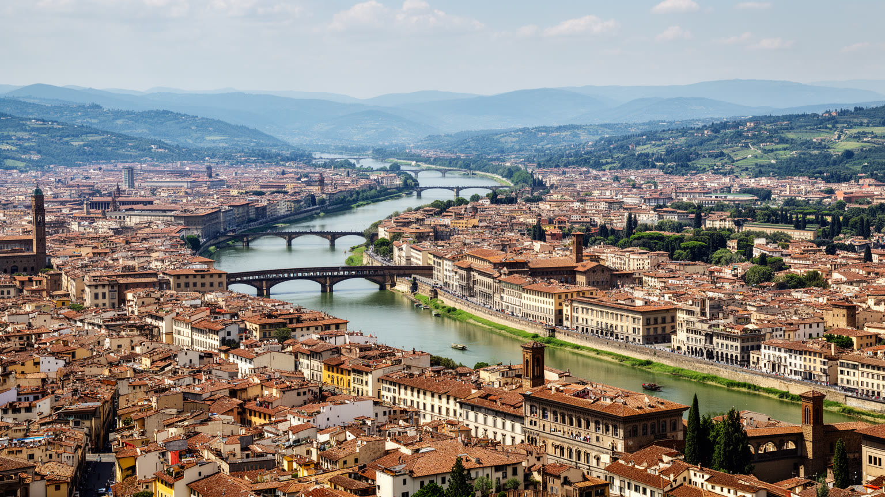
フィレンツェの都市構造は、アルノ川と周囲の丘陵を抜きに読めません。川はポンテ・ヴェッキオの絵葉書的な背景である前に、製粉、染色、革加工、商業、洪水、橋の防衛を結んできた実用の軸です。北岸には大聖堂、共和国広場、ウフィツィ、サンタ・マリア・ノヴェッラ駅があり、南岸のオルトラルノには工房、庭園、坂道、展望地が重なります。中心は徒歩で横断できるほど小さい一方、観光客、学生、通勤者、配送車、路面電車、バスが狭い街路で交差します。川沿いの低地は洪水の記憶を持ち、丘の住宅地は眺望と静けさを与えますが、移動や家賃の条件は違います。フィレンツェを理解するには、美しい橋だけでなく、水位、石畳、坂、駅から旧市街へ入る人の流れを見る必要があります。駅前から旧市街へ向かう道では、到着した旅行者の荷物、通学する若者、ホテルへ食材を運ぶ車が重なり、保存都市の裏側にある物流が見えてきます。丘の上の眺望は都市を一枚の絵にしますが、実際の生活は橋を渡る回数、坂を上る体力、バスの本数によって細かく分かれます。郊外の住宅地や病院、空港、展示会場との連絡も、旧市街の経済を背後から支えます。橋の混み方も生活条件を映します。近さと遠さが毎日の負担を分けます。都市の小ささは親密さを生むと同時に、混雑と生活圧を逃がしにくくします。
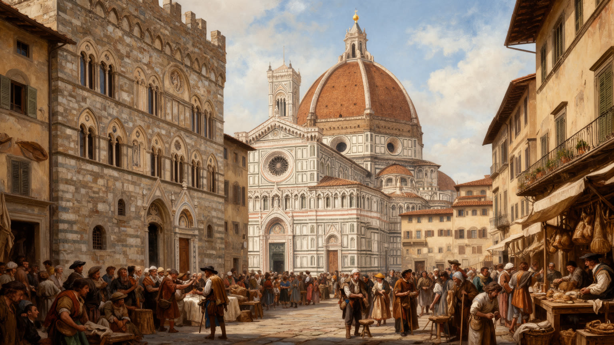
フィレンツェの名声は、美術品が多いという単純な事実だけではありません。中世末からルネサンス期にかけて、銀行、羊毛業、ギルド、共和国政治、メディチ家の保護、教会の権威が緊張しながら都市を動かしました。大聖堂の巨大なドーム、ヴェッキオ宮殿、シニョリーア広場、礼拝堂、修道院は、信仰の場所であると同時に権力を見せる装置です。画家、彫刻家、建築家は天才として語られがちですが、実際には注文主、職人組織、材料、金融、政治的メッセージの中で働いていました。美術は市民の誇りを作り、都市間競争の武器にもなりました。広場に置かれた彫像や宮殿の壁面は、公共の美しさであると同時に、誰が都市を支配するかを示す言語でもありました。共和制の記憶と一族支配の記憶は矛盾しながら並び、都市の自由という言葉を複雑にしています。商人の富は教会への寄進や公共事業へ流れましたが、それは信仰心だけでなく名誉、赦し、政治的影響力を得る手段でもありました。政治の緊張は広場の配置にも残ります。都市の誇りは競争の記憶でもあります。後にフィレンツェはイタリア統一期の首都も経験し、地方都市でありながら国家形成の記憶も持ちます。旧市街を歩くことは、作品を鑑賞するだけでなく、誰が資金を出し、誰が公共空間で威信を示し、誰がその陰で労働したのかを読むことです。
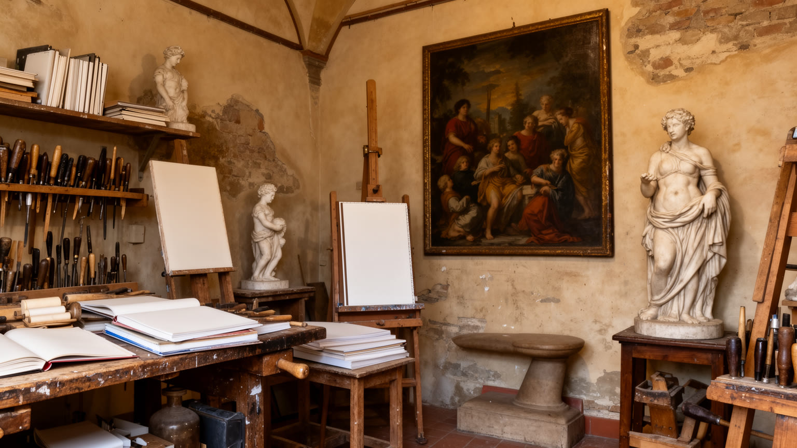
フィレンツェの文化産業は、ウフィツィやアカデミア美術館に展示された名作だけで成り立つわけではありません。額装、金箔、革、紙、宝飾、木工、修復、写真、ガイド、翻訳、展示設営、清掃、警備、予約管理が、来訪者の経験を支えています。オルトラルノの工房では、観光客向けの実演と本格的な注文仕事が隣り合い、手仕事は伝統であると同時に市場への対応でもあります。修復の現場はとくに重要です。洪水や経年で傷んだ作品を守るには、科学分析、職人技、歴史研究、資金、国際協力が必要になります。一方で、中心部の家賃上昇は小規模工房を周縁へ追いやり、熟練の継承を難しくします。若い作り手は学校で技術を学んでも、作業場を借り、材料を買い、観光向けではない注文を得るまでに大きな負担を抱えます。文化財の価値が上がるほど、その近くで文化を作る人が住みにくくなる逆説もあります。美術館の予約制度や混雑管理も、新しい専門労働を生み、作品を守る技術と来館者をさばく技術を同時に求めています。作品を守る仕事は静かな専門職です。その評価も必要です。フィレンツェを美術の都と呼ぶなら、完成した作品だけでなく、素材を準備し、表面を直し、来訪者を案内し、夜に床を清掃する労働まで見なければなりません。文化は展示室の中だけでなく、働く手の連続で残ります。
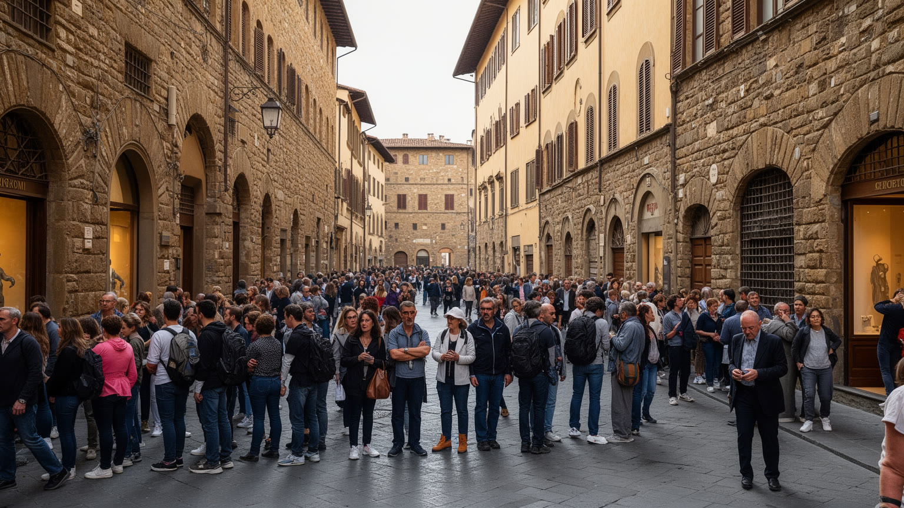
フィレンツェ観光の魅力は、ドゥオーモ、ウフィツィ、ヴェッキオ橋、サンタ・クローチェ、ピッティ宮殿、ボーボリ庭園を徒歩で結べる密度にあります。しかし、その密度は都市に大きな負担も与えます。狭い街路に団体客、日帰り客、学生、住民、配送が集中し、夏には暑さと行列が生活のリズムを変えます。短期賃貸は宿泊の選択肢を増やす一方、中心部の住宅を観光商品へ変え、日用品店や住民向けサービスを減らします。名所の保存には入場料と観光収入が欠かせませんが、来訪者の数が増えすぎれば、静かな祈りの場や近所の広場まで消費の舞台になります。日帰り客は都市に大きな人流をもたらしても、滞在税や地域の店への支出が限られることがあり、負担と収益の釣り合いが問題になります。住民が市場で買い物をし、子どもを学校へ送り、夜に眠れる環境も遺産保護の一部です。ガイド、ホテル、飲食店、清掃、交通の仕事は観光に依存するため、人流を抑える議論は雇用の不安とも結びつきます。だからこそ量だけでなく滞在の質を高める政策が重要です。観光を否定することはできません。都市の雇用、修復、国際的な評価は観光に支えられています。問題は、訪れる人の満足と住む人の生活をどう両立させるかです。フィレンツェの遺産は、写真を撮る対象である前に、今も人が通学し、買い物し、祈り、働く都市の表面です。
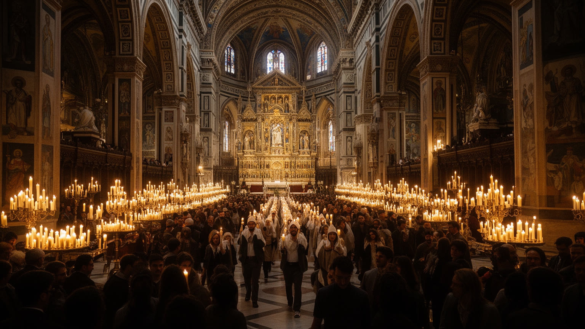
フィレンツェの宗教空間は、建築美を眺める場所であると同時に、都市の暦を刻む場所です。サンタ・マリア・デル・フィオーレ大聖堂、サンタ・クローチェ、サンタ・マリア・ノヴェッラ、サン・ロレンツォのような教会は、美術、墓所、説教、巡礼、家族の記憶を重ねています。復活祭の儀礼や守護聖人サン・ジョヴァンニの祭りは、観光イベントである前に、街が自分の歴史を再確認する日です。教会は豪華な注文主の記念碑でもあり、貧しい人への施しや共同体の支援を担った場所でもありました。現在のフィレンツェには移民の礼拝、学生の信仰、観光客の見学が同じ空間に入り、静けさを保つこと自体が管理の課題になります。鐘の音、行列、葬儀、祝日の閉店、教会前の広場の使われ方は、宗教が観光展示ではなく日常の時間を組み立てていることを示します。信仰を持たない人にとっても、教会は避暑、音楽、記憶、慈善の場所になります。さらに宗教施設は、外国人や貧困層の相談、食料支援、孤立した高齢者への手助けにも関わります。観光客には見えにくい福祉の働きが、都市の共同性を支えています。宗教を読むには、祭壇画やファサードだけでなく、祈る人、案内係、修復費、入場管理、葬送、地域行事を見る必要があります。信仰の場所が観光資源になるほど、祈りと鑑賞の境界をどう守るかが都市の成熟を試します。
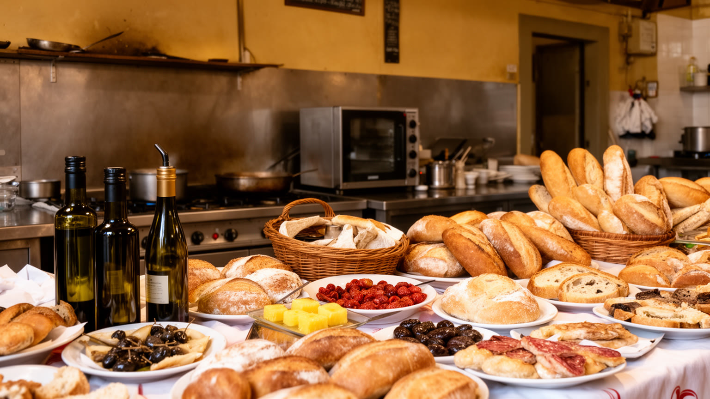
フィレンツェの日常は、美術館の外にある市場、パン屋、バール、食堂、学校、診療所、バス停に表れます。ビステッカ、豆料理、パン、ワイン、オリーブ油、トリッパの屋台は観光客にも知られますが、食の風景は地元の買い物、昼休み、家族の食卓、郊外から届く農産物に支えられています。中央市場やサンタンブロージョ周辺では、観光向けの飲食と住民向けの食材が同じ通りに並びます。これは魅力でもあり、緊張でもあります。観光消費が強くなるほど、価格、営業時間、店の構成は来訪者に合わせて変わり、普段使いの店が減ることがあります。住民にとって重要なのは、名物料理の評判だけでなく、手頃な昼食、通学路の安全、医療へのアクセス、暑い日の休憩場所、近所で挨拶できる関係です。朝のバールで短くコーヒーを飲む習慣、昼食後の静かな時間、夕方の買い物は、観光客の滞在時間とは違う都市のリズムを作ります。食の価格が観光地化すると、こうした小さな反復が失われ、生活の手触りも薄くなります。市場で交わされる短い会話や常連の顔ぶれは、観光案内には出にくい都市の安全網です。フィレンツェの食を読むことは、皿の上の伝統を味わうだけでなく、その材料を運ぶ人、早朝から仕込む人、観光客と住民の需要を調整する店の苦労を見ることです。食は都市の生活圏を保つ小さな公共性です。
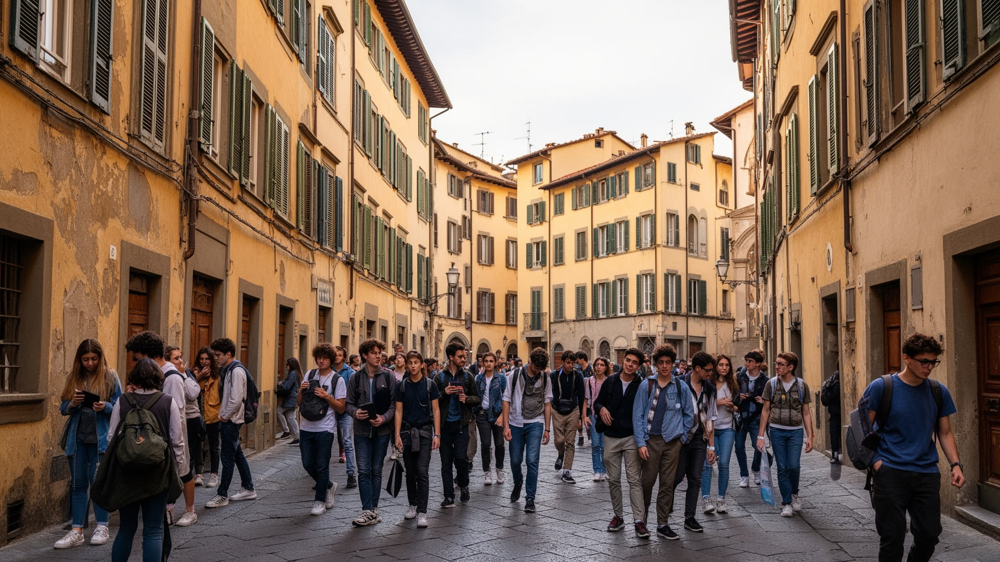
フィレンツェの住宅問題は、大都市の高層再開発とは違う形で現れます。旧市街は保存規制が強く、新しい住宅を大量に供給しにくい一方、世界中から観光客、留学生、研究者、短期滞在者が集まります。短期貸しや学生向け賃貸が増えると、中心部に長く住む家族や高齢者は家賃と騒音に悩み、日常の店や学校の利用者も減りやすくなります。学生は都市に若さ、言語、夜の消費、学術交流をもたらしますが、住居費の高騰や一時的な滞在の多さは、地域の持続性を揺らします。オルトラルノや周辺地区では、工房、住宅、宿泊施設、飲食店が近接し、誰のための街路なのかが問われます。古い建物は階段、配管、断熱、騒音の問題を抱え、修復費を負担できるかどうかで住み続けられる人が分かれます。若い世帯が中心を離れれば、学校や日用品店も弱り、旧市街は夜だけ賑わう場所になりかねません。住民登録、公共交通、ゴミ出し、騒音規制のような地味な制度も、観光地化した住宅街を保つために重要です。歴史的な建物を守ることは重要ですが、建物だけが残り、住民が離れれば都市は舞台装置に近づきます。フィレンツェを生活都市として保つには、短期滞在を管理し、学生と住民の共存を支え、修復された家が実際の住まいとして使われる条件を整える必要があります。保存と居住は対立ではなく、同時に守るべき課題です。
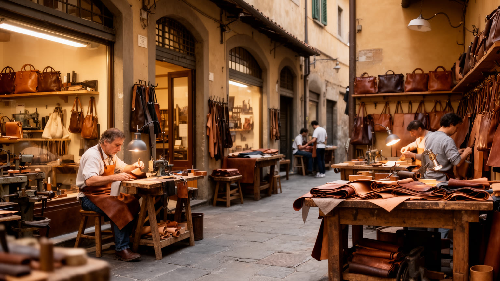
フィレンツェは美術史の都市であると同時に、革製品、繊維、宝飾、香水、紙、靴、ファッション見本市の都市でもあります。トスカーナの素材と職人技は、観光土産から高級ブランドまで幅広い市場に接続されています。革のバッグや手袋、金細工、製本、マーブル紙は、来訪者が手に取れる形で都市の記憶を持ち帰らせます。しかし、クラフトは単なる懐古趣味ではありません。デザイン、国際流通、オンライン販売、職業教育、移民労働、品質管理、模倣品対策と結びつく現代産業です。大きなブランドや見本市が注目される一方、小さな工房は家賃、後継者不足、観光向け商品の圧力に直面します。革や繊維の産業は周辺地域の工場、物流、展示会場とも結びつき、旧市街の店先だけでは見えない広域の分業で成り立ちます。高級品の輝きの裏には、縫製、染色、販売、清掃、在庫管理など多くの仕事があります。職人の仕事は見せる価値があるほど商品化されやすく、実演が本来の制作時間を奪うこともあります。職業学校や家族経営の工房が若い人へ技能を渡せるかは、都市の文化政策そのものです。フィレンツェの工芸を読むには、店頭の美しさだけでなく、材料の仕入れ、技能の学習、作業場の場所、若い職人が生活できる収入を見る必要があります。都市の魅力は、過去の様式を保存するだけでなく、手仕事が現在の職業として続くことで保たれます。
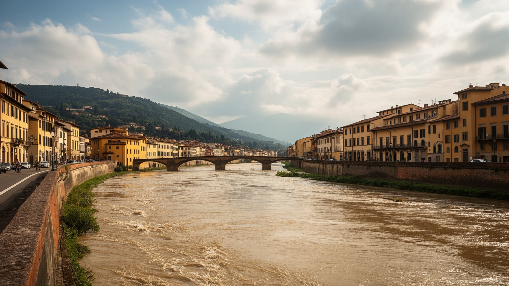
フィレンツェの気候は、明るいトスカーナの印象だけでは語れません。夏は盆地状の地形に熱がこもり、石畳、観光の行列、古い建物の断熱不足が暑さを強めます。冬から春にかけては雨が増え、アルノ川の増水は都市の記憶に深く刻まれています。一九六六年の大洪水は、図書館、教会、美術品、工房、住宅を傷つけ、世界中から修復支援を集めました。この経験は、フィレンツェの遺産が自然から切り離された宝物ではなく、水、泥、湿気、気候変動にさらされる都市の一部であることを示しています。現在も洪水対策、排水、橋の管理、地下空間の保護、作品の保存環境、観光客への避難情報が重要です。暑さは住民、高齢者、屋外労働者、行列に並ぶ来訪者に影響し、日陰や水飲み場、公共交通の使いやすさを生活問題に変えます。石造りの街路は昼の熱を夜まで残し、緑陰の少ない広場では休める場所が限られます。多言語の注意喚起や涼める公共空間は、観光都市にとって安全対策でもあります。気候リスクは作品の保存庫、地下室、古文書、食品市場にも及び、文化政策と防災計画を切り離せません。保険や修復費の負担も重くなります。気候対策は景観を損なわずに行う必要があるため難しいですが、遺産を守ることと人の健康を守ることは同じ課題です。川と暑さへの備えが、これからの保存都市の質を決めます。
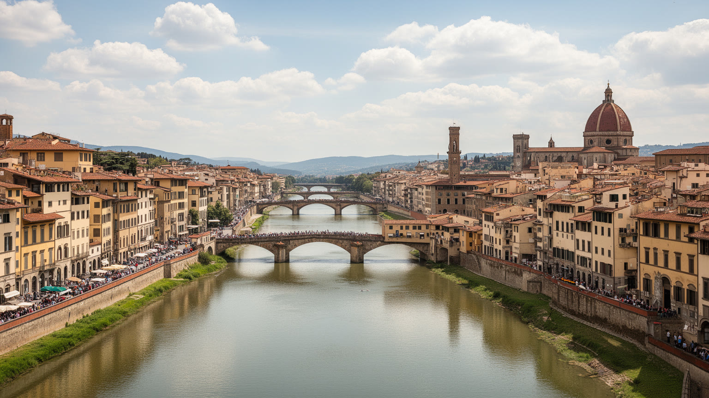
フィレンツェは規模だけで見れば巨大都市ではありません。それでも世界の都市史で特別な重みを持つのは、政治、金融、職人技、信仰、美術、観光、教育が小さな旧市街に高密度で重なるからです。ルネサンスの名作は都市の象徴ですが、現在のフィレンツェを読むには、橋を渡る住民、工房で働く職人、予約をさばく美術館職員、短期貸しに揺れる住宅、大学に通う学生、祭りを準備する教会、暑い日に広場で休む人まで一緒に見る必要があります。世界から来る視線は都市を豊かにし、修復や雇用を支えますが、同時に中心部を住みにくくし、日常の店を観光向けに変える力にもなります。フィレンツェの価値は、過去の美を保存する能力だけではありません。保存された街で人が暮らし、働き、祈り、学び続けられるかにあります。都市の核心は、名作が集中していることではなく、名作の周囲で生活が続くことです。観光、教育、工芸、信仰、住宅を別々に扱うと、保存都市の問題は見えにくくなります。来訪者にとっての理想的な古都と、住民にとっての使いやすい街が一致するとは限らない点に、この都市の難しさがあります。美術史の舞台として眺めるだけなら、都市は完成した展示物に見えます。しかし、アルノ川の水、家賃、季節労働、学生、工房、祈りの時間を重ねると、フィレンツェは現在も交渉を続ける生活都市として立ち上がります。